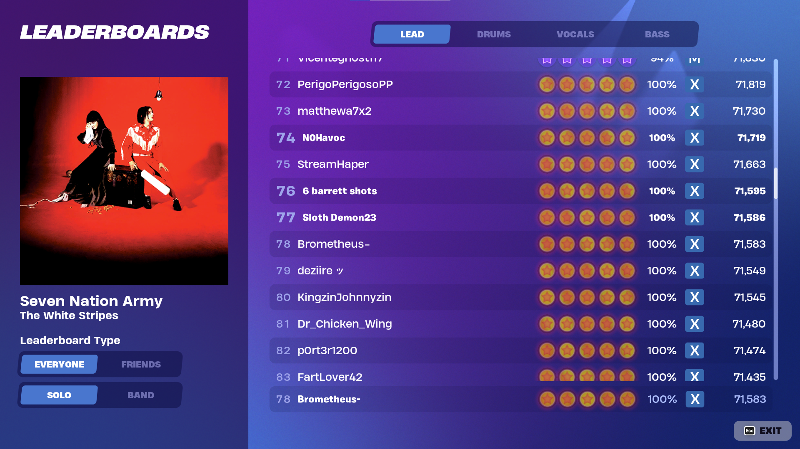
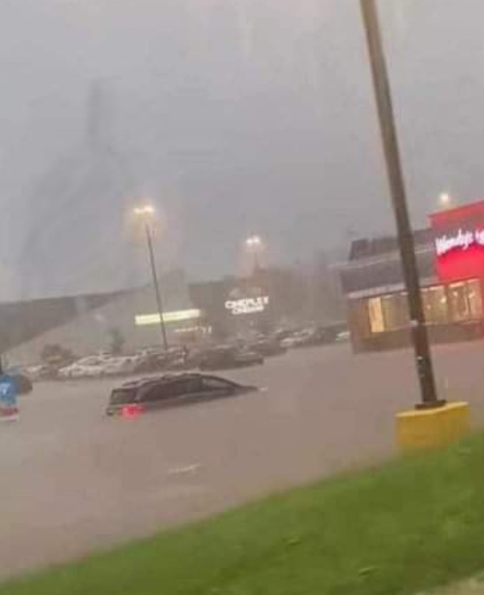

My Portfolio
This is a screensnip of a program I wrote for the intro to logic and programming course. It is a command line program which I have designed to act as a pseudo-command line, of sorts. This program comes with a database of information regarding the long running television show "One Piece", and can search by a number of parameters. All you have to do is read the help menu and use a few simple commands to filter out any data you don't want, and then print the results to the command line. It can also export the results as a new file or count the number of results matching your criteria.
This is a little bit of fancy video editing I did for my submission to go along with the program above. It consists of some short animations to zip those clips of me typing away across the screen, as well as plenty of fast cuts. It is surprisingly hard to align video to audio, because when moving frame by frame you can see pretty well but you can't really hear anything. The music is the opening theme to the show the program is about.
This is the leaderboard for a rhythm game by the same devs who made the classic rhythm franchise Rockband. In seventy-eighth place worldwide is a user by the name of Brometheus-, and if you'll believe it, that's me! I've always been a pretty big fan of rhythm games, and it turns out I'm pretty good at this one. This skill doesn't transpose well into anything else but at least it proves I have persistence and a degree of "keep at it"itude.
I did this.